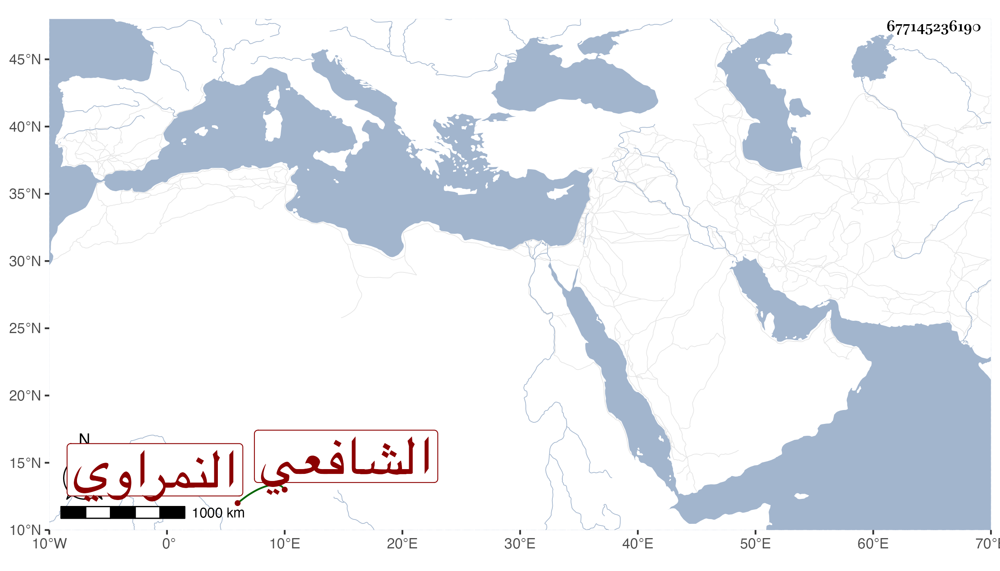

0902Sakhawi.DawLamic.ITO20230111-ara1.EIS1600.677145236190
Biography ID: 677145236190
428
حسن بن علي بن حسن بن أبي بكر بن صلاح الدين بن الشيخ نصر البدر النمراوي الشافعي أحد أصحاب أبي العباس الغمري ويعرف بابن الطويل . ولد قبل سنة خمسين وثمانمائة بنمرة ونشأ فقرأ القرآن وكثيرا من المنهاج الفرعي وقطعة من الأصلي وجميع هدية الناصح وألفية النحو والشاطبية ورائية الشيخ عبد العزيز الديريني في مرسوم الخط وحضر في دروس العبادي وابن أخيه الشهاب والفخر المقسي والجوجري والبرمكيني في آخرين وشارك في الفضيلة وكتب بخطه أشياء ولازمني في الاملاء وغيره وخطب بجامع الغمري وغيره ، وأقرأ مماليك أزدمر المسرطن أحد المقدمين ، ونعم الرجل .
